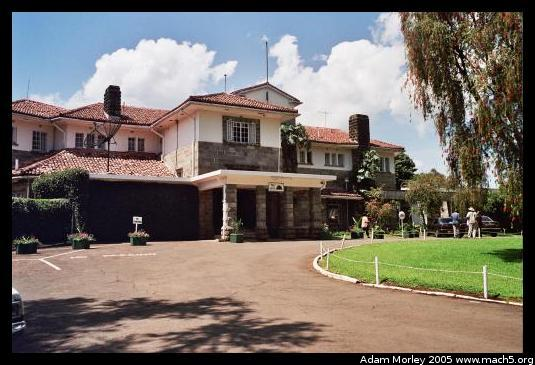
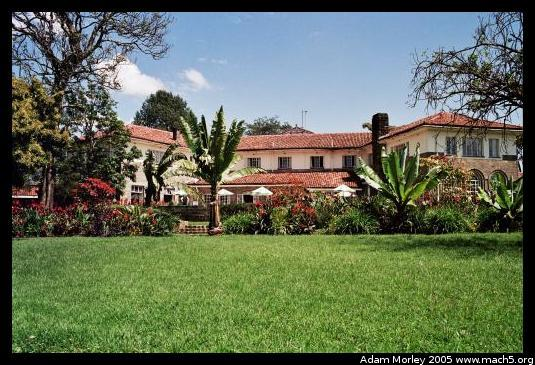
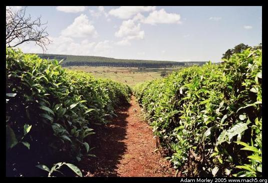
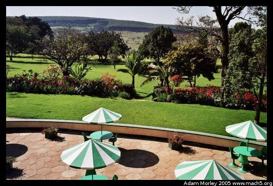

I went to Kericho to visit my friend Rachel. She was living in southern Kenya doing volunteer work related to her studies at Oxford. Kericho is the home of the Kenyan tea country. Kenya is famous for its black tea, exported mostly to the UK. The Brits do like their tea.
I have read in a guide book that Kericho had an old, colonial hotel called the Tea Hotel that was somewhat out-dated, but still very quaint. It turned out to be an impressive looking hotel, but somewhat sad. It was clear that the Tea Hotel's best years have since passed.
The front of the Tea Hotel. I arrived by matatu, as usual, and came by foot the rest of the way. Matatus to Kericho are direct if you pick the right one, which is wonderful. There are also some really upscale matatus with normal size seats and real seat belts.
And from the back. This hotel is situated back from the road, in a town that is otherwise a typical Kenyan town. The grass reminded me of when I was in Florida many years ago --- crab grass.
Kericho, being the tea country, had tea bushes all over the place. Sadly, we were in town on a weekend, so we didn't get to visit a tea mill.
The view from our room. The garden was extremely impressive, given the location. I also had proper Weetabix for the first time at the Tea Hotel.
Adam can be reached at adam dot morley at gmail dot com